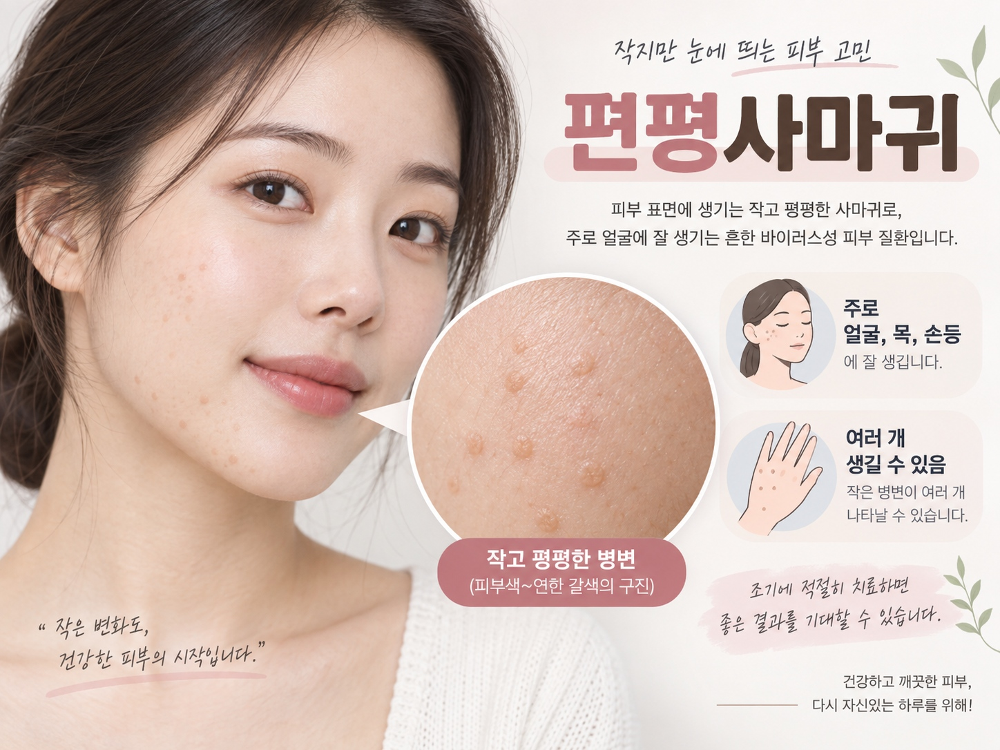

![전주편평사마귀한의원, 아이한테 옮을 수도 있나요 [후한의원 전주점 칼럼]](../assets/images/doctor-heo.jpg)
안녕하세요.
후한의원 전주점 허정위 대표원장입니다.
지난 칼럼에서 임신, 수유 중 편평사마귀 치료에 대해 말씀드렸는데요.
그 이후로 아이를 키우시는 어머님들께 비슷한 질문을 정말 많이 받고 있습니다.
"제 몸에 편평사마귀가 있는데, 아이한테 옮지는 않을까요."
오늘은 이 부분을 정리해서 전주 편평사마귀 상담을 고민하시는 분들께 도움을 드리고자 합니다.
편평사마귀, 전염되는 게 맞나요
편평사마귀는 사람유두종바이러스(HPV) 감염으로 생기는 피부질환으로, 접촉을 통해 옮을 수 있는 것이 사실입니다.
특히 피부 장벽이 약하거나 상처가 있는 부위, 그리고 면역력이 상대적으로 약한 아이들은 성인보다 감염에 더 취약할 수 있습니다.

수건이나 목욕용품을 함께 쓰거나, 스킨십이 많은 육아 특성상 부모의 병변 부위와 아이 피부가 자주 맞닿는다면 전염 가능성을 무시하기는 어렵습니다.
그렇다고 너무 불안해하지 않으셔도 됩니다
같은 바이러스에 노출되어도 실제로 병변이 생기는지는 개인의 피부 상태와 면역력에 따라 차이가 큽니다.
전주 편평사마귀로 내원하시는 부모님 중에서도, 아이와 함께 생활하면서 적절히 관리해 아이에게는 병변이 생기지 않은 경우를 자주 봅니다.
무조건 옮는 것이 아니라, 관리에 따라 충분히 예방할 수 있는 부분이라고 이해해주시면 좋겠습니다.
일상에서 이렇게 관리해보세요
병변 부위를 손으로 만지거나 긁지 않도록 하시고, 만졌다면 바로 손을 씻는 습관을 들이는 것이 가장 기본입니다.
수건, 면도기, 목욕 스펀지 등은 아이와 따로 사용하시고, 병변 부위는 옷이나 밴드로 가려 직접 접촉을 줄여주시는 것이 도움이 됩니다.
아이와 함께 목욕할 때는 병변 부위가 물이나 스펀지를 통해 다른 부위로 옮겨가지 않도록 유의해주세요.
아이 피부에 비슷한 게 보인다면
아이 피부에 오돌토돌하거나 편평한 좁쌀 같은 병변이 보인다면, 자가 판단으로 방치하지 마시고 빠르게 진료를 받아보시는 것이 좋습니다.
아이는 성인보다 면역 반응이 다르게 나타날 수 있어, 초기에 확인하고 상황에 맞는 관리 방향을 잡는 것이 중요합니다.
전주 편평사마귀 상담 시 아이 피부 상태를 함께 봐드릴 수 있으니, 온 가족이 함께 방문하셔도 괜찮습니다.
저희 후한의원 전주점은 이렇게 접근합니다
성인 환자분의 치료와 별개로, 가족 내 전염 예방을 위한 생활 관리 방법을 함께 안내해드리고 있습니다.
아이의 경우 나이와 피부 상태를 고려해 자극이 적은 방식으로 접근하며, 필요 시 코트라 CO2레이저와 침치료를 병행한 성인 치료 원칙을 아이에게 맞게 조정합니다.
가족 구성원 전체의 병변 상태를 파악한 뒤, 확산을 막는 방향으로 치료 계획을 세워드립니다.
자주 묻는 질문
- Q. 저만 치료받으면 아이한테 안 옮을까요.
A. 치료로 병변 수가 줄어들면 전염 위험도 함께 낮아지지만, 완전히 없어지기 전까지는 생활 관리를 병행하시는 것이 안전합니다. - Q. 아이도 레이저 치료가 가능한가요.
A. 병변 상태와 나이를 확인한 뒤 가능 여부와 적절한 방식을 안내해드리고 있습니다. - Q. 잠복기가 있다고 들었는데, 얼마나 지켜봐야 하나요.
A. 개인차가 있지만 수개월의 잠복기를 거쳐 나타나는 경우도 있어, 노출 이력이 있다면 당분간 피부 상태를 주기적으로 살펴보시는 것을 권해드립니다.
가족 중 편평사마귀가 있어 전주 편평사마귀 상담을 고민하고 계시다면, 후한의원 전주점에서 온 가족의 피부 상태를 함께 확인받아보세요.
- #전주편평사마귀
- #후한의원전주점
- #아이전염
- #가족관리
- #HPV피부질환